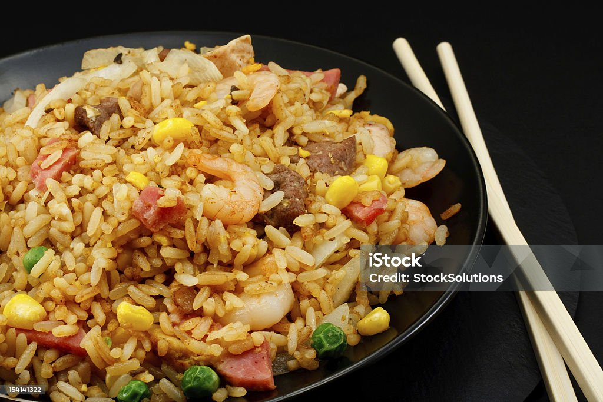

Stirfry Rice

tasty and savoury stir fry
Stir-fried rice is the ultimate college student meal—quick, easy, and versatile. It's the perfect way to use up leftover rice and vegetables, and you can customize it with whatever ingredients you have on hand.
Whether you're looking for a simple meal after a long day of classes or something to take to the next level for a quick dinner with friends, stir-fry rice has you covered. Plus, it's a great way to pack in some
veggies while enjoying a satisfying and flavorful dish. With a few basic ingredients and a hot skillet, you can create a delicious meal that fits your busy student lifestyle.
This stir-fry rice recipe is easy to follow and can be prepared in under 20 minutes. You'll need just a few staple ingredients like cooked rice, soy sauce, and a variety of vegetables. For extra protein, feel free to add
in eggs, tofu, or leftover chicken or shrimp. The beauty of stir-fried rice is that it's highly adaptable, so don't hesitate to get creative with what you've got in the fridge. All it takes is a little prep, a hot pan,
and a few quick steps to turn your ingredients into a delicious and filling meal that's perfect for any time of day.
Ingredients
- 2 cups cooked rice (preferably cold or day-old rice)
- 1 tablespoon vegetable oil (or any cooking oil you prefer)
- 2 large eggs (optional, for added protein)
- 1 cup mixed vegetables (frozen or fresh, like peas, carrots, bell peppers, or broccoli)
- 1/4 cup soy sauce (or tamari for gluten-free)
- 1-2 cloves garlic, minced
- 1/2 teaspoon ground black pepper
- 1/2 teaspoon sugar (optional, to balance flavors)
- Protein of your choice (optional: chicken, shrimp, tofu, or pork)
Green onions or cilantro for garnish (optional)
Steps
- Break up leftover rice, chop vegetables, and cut protein (if using) into small pieces.
- cramble the eggs in a skillet with 1 tablespoon oil, then remove and set aside.
- Sauté garlic (and onion, if using) for 1 minute, then add mixed vegetables and cook for 3-4 minutes.
- Add cooked protein and stir-fry for 1-2 minutes to heat through.
- Add cold rice to the skillet, breaking up clumps and stir-fry for 2-3 minutes.
- Add soy sauce, sesame oil (if using), black pepper, and sugar (if using), and mix well.
- Add scrambled eggs back to the skillet and stir to combine.
- Taste and adjust seasoning, then garnish with green onions or cilantro and serve immediately.